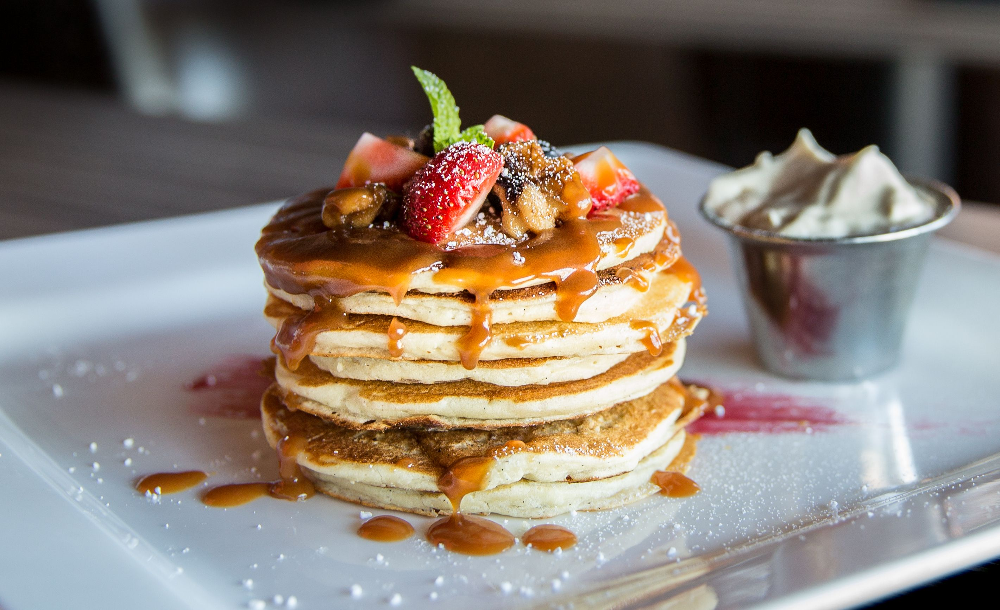

These pancakes are a very nice morning, dinner or evening dish. They are really easy to make, requiring only five minutes of preperation.
I personally makes them every friday, because tney are jsut that good.
Mix all of the ingredians up and start cooking
Home